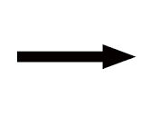

<html>
  <head> </head>
  <link rel="stylesheet" href="./eyes.css" />
  <body>
    <!-- 
     -->
    <div class="eyes">
      <div class="eye">
        <div class="ball" id="pupil1"></div>
      </div>
      <div class="eye">
        <div class="ball" id="pupil2"></div>
      </div>
    </div>
    <h1 id="test">
      
    </h1>
  </body>
  <script>
    var balls = document.getElementsByClassName("ball");
    let testbox = document.getElementById('test');
    // let arrow1 = document.getElementById('testarrow1');
    // let arrow2 = document.getElementById('testarrow2');
    let mouseX = 0;
    let mouseY = 0;
    let windowX = 0;
    let windowY = 0;
    // let testArrowHeight = 128;
    // let testArrowWidth = 166;

    // document.onmousemove = () => {
    document.onclick = () => {
      var x = (event.clientX * 100) / window.innerWidth + "%";
      var y = (event.clientY * 100) / window.innerHeight + "%";
      
      for (let i = 0; i < 2; i++) {
        balls[i].style.left = x;
        balls[i].style.top = y;
        balls[i].transfoorm = "translate(-" + x + ",-" + y + ")";
      }
      let mouseX = event.clientX;
      let mouseY = event.clientY;
      let windowX = window.innerWidth;
      let windowY = window.innerHeight;
      
      let infoString = 'mouse at: (' + mouseX +', ' + mouseY + ')  window dimensions: (' + windowX + ', ' + windowY + ')';
      testbox.innerText = infoString;
      let eyecenterY = Math.floor( windowY /2);
      // arrow1.style.top=((eyecenterY - testArrowHeight/2)+ 'px');
      // arrow2.style.top=((eyecenterY - testArrowHeight/2)+ 'px');
      let margin = 40;
      let eyeWidth = 240;
      let eyeHeight = 120;
      let pupilradius = 80;
      let distanceBetweenPupils = eyeWidth + margin * 2;
      let eye1centerX = Math.floor(windowX/2 + distanceBetweenPupils/2);
      let eye2centerX = Math.floor(windowX/2 - distanceBetweenPupils/2);
      let angleEye1 = findAngleRad(eye1centerX,eyecenterY,mouseX,mouseY);
      let angleEye2 = findAngleRad(eye2centerX,eyecenterY,mouseX,mouseY);
      let thetaRound1 = Math.round((angleEye1 * 180) / Math.PI)
      let thetaRound2 = Math.round((angleEye2 * 180) / Math.PI)
      // arrow1.style.left=((eye1centerX - testArrowWidth/2)+ 'px');
      // arrow2.style.left=((eye2centerX - testArrowWidth/2)+ 'px');
      // let arrow1AngleString = 'rotate(' + thetaRound1.toString() + 'deg)';
      // let arrow2AngleString = 'rotate(' + thetaRound2.toString() + 'deg)';
      // arrow1.style.transform = arrow1AngleString;
      // arrow2.style.transform = arrow2AngleString;

      // let  eye1AngleSpaceInWindow = boxAngle2distance(angleEye1, -1 * eye1centerX, windowX - eye1centerX, -1 * eyecenterY, windowY - eyecenterY);
      // let  eye1space2move = boxAngle2distance(angleEye1, (-1 * eyeWidth)/2, eyeWidth/2, (-1 * eyeHeight)/2, eyeHeight/2) - pupilradius/2;
      // let  eye2AngleSpaceInWindow = boxAngle2distance(angleEye2, -1 * eye2centerX, windowX - eye2centerX, -1 * eyecenterY, windowY - eyecenterY);
      // let  eye2space2move = boxAngle2distance(angleEye2, (-1 * eyeWidth)/2, eyeWidth/2, (-1 * eyeHeight)/2, eyeHeight/2) - pupilradius/2;

      // let eye1ToPoint = distance(eye1centerX, eyecenterY, mouseX, mouseY);
      // let Afactor1 = eye1AngleSpaceInWindow - eye1space2move;
      // let afactor1 = eye1space2move - eye1ToPoint;
      // let Bfactor1 = eye1space2move;
      // let bfactor1 = ( afactor1 * Bfactor1) / Afactor1;
      // let eye1newpupilpositionX = eye1centerX + bfactor1*Math.cos(angleEye1);
      // let eye1newpupilpositionY = eyecenterY  + bfactor1*Math.sin(angleEye1);
      // let newPupilLeft1  = Math.round(eye1newpupilpositionX);
      // let newPupilRight1 = Math.round(eye1newpupilpositionY);
      // let pupil1 = document.getElementById('pupil1');
      // pupil1.style.left  = newPupilLeft1;
      // pupil1.style.right = newPupilRight1;
      
      // let eye2ToPoint = distance(eye2centerX, eyecenterY, mouseX, mouseY);
      // let Afactor2 = eye2AngleSpaceInWindow - eye2space2move;
      // let afactor2 = eye2space2move - eye2ToPoint;
      // let Bfactor2 = eye2space2move;
      // let bfactor2 = ( afactor2 * Bfactor2) / Afactor2;
      // let eye2newpupilpositionX = eye2centerX + bfactor2*Math.cos(angleEye2);
      // let eye2newpupilpositionY = eyecenterY  + bfactor2*Math.sin(angleEye2);
      // let newPupilLeft2  = Math.round(eye2newpupilpositionX);
      // let newPupilRight2 = Math.round(eye2newpupilpositionY);
      // let pupil2 = document.getElementById('pupil2');
      // pupil2.style.left  = newPupilLeft2;
      // pupil2.style.right = newPupilRight2;

      
    }
      function distance(x1,y1,x2,y2){
        let answer = (x2 - x1) ** 2 + (y2 - y1) ** 2;
        answer = answer ** .5;
        return answer;
      } 
      function findAngleRad(x1,y1,x2,y2){
        
        return Math.atan2(y2 - y1, x2 - x1);

      }

      //imagine a ray from the origin moving out till it hits a box defined by y = xmin, y=xman, x=ymin, x=ymax
      //given box limits xmin,xmax,ymin,ymax and angle theta, find the distance till the box is hit moving from 0,0
      function boxAngle2distance(theta,xmin,xmax,ymin,ymax,inputAngleInDegrees = false){
        console.log('theta: ' + theta)
        console.log('xmin: ' + xmin);
        console.log('xmax: ' + xmax);
        console.log('ymin: ' + ymin);
        console.log('ymax: ' + ymax);

        //expect min's to be negative, maxes to be positive, but the following will make the function work even if their not
        

        if(inputAngleInDegrees){theta = degreesToRadians(theta)};
        theta = angleSelector(theta);
        let xdistance = Infinity;
        let ydistance = Infinity;
        const yVal = Math.sin(theta);
        const xVal = Math.cos(theta);
        
        if(theta < 0){console.log('unexpected angle into boxAngle angleselector isn\' working as designed theta: ) ' + theta);
        
      }else if( theta === 0) { return xmax
      }else if(theta < Math.PI/2) {
        xdistance = xmax/xVal;
        ydistance = ymax/yVal;
      }else if(theta === Math.PI/2){ return ymax;
      }else if(theta < Math.PI) {
        xdistance = xmin/xVal;
        ydistance = ymax/yVal;
      }else if(theta === Math.PI){return ymax
      }else if(theta < (Math.PI *3)/2) {
        xdistance = xmin/xVal;
        ydistance = ymin/yVal;
      }else if(theta === (Math.PI *3)/2){return ymax
      }else if(theta < Math.PI * 2) {
        xdistance = xmax/xVal;
        ydistance = ymin/yVal;
      }else {console.log('unexpected angle into boxAngle angleselector isn\' working as designed theta: ) ' + theta);

        let smallest = xdistance < ydistance;
        let answer = smallest ? xdistance : ydistance;
        console.log(answer);
        return answer;

      }
      
//numbyMod I first used when making pacman move at different angles,  it can be used to make any angle equal to its equivlent on the interval [0,2pi]
//numByMod function takes number, num, to its equivlent modulo, mod (must be positive number),
// third argument, floorNum , is lowest output (0 by default)
//if the forth argument optional topClosed is true (false by default), the floorNum number is now the maximum output instead, and lesser boundary is open

  function numByMod(num, mod, floorNum,topClosed){
  let ans = num % mod;
  if( ans < 0 ){ans += mod};
  if(floorNum === undefined){return ans};
  let floorNumEquivlent = floorNum % mod;
  if(floorNumEquivlent < 0){ floorNumEquivlent +=mod };
  if(ans === floorNumEquivlent){return floorNum};
  if(ans < floorNumEquivlent){ ans += mod};
  let shiftNeeded = Math.floor(floorNum / mod) * mod;
  ans += shiftNeeded;
  if(topClosed){ans -= mod};
  return ans;
  }

  //uses number to change angle to first representative at or above zero,
  //defaults to input and output radians
  function angleSelector( theta, degreesIn = false , degreesOut /*= degreesIn*/){
    if(degreesOut === undefined){ degreesOut = degreesIn}
    if( degreesIn){ theta = degreesToRadians(theta);}
    let answer = numByMod(theta, 2*Math.PI, 0, false);
    if( degreesOut){ answer = radiansToDegrees(answer);}
    return answer;
  }

  function radiansToDegrees(theta){
    let answer = (theta * 180)/Math.PI;
    return answer;
  }

  function degreesToRadians(theta){
    let answer = (theta * Math.PI)/180;
    return answer;
  }
    
  </script>
</html>
